Es el enfoque mas antiguo y clasico.Propone un avance estrictamente secuencial: Requisitos > Anlaisis > Diseño > Codifiacion > Pruebas. cada fase debe generar un documento o producto aprobado antes de iniciar la siguiente. Este se utiliza mucho en proyectos de ingenieria gubernamental o de defensa, donde la domuentacion es prioritaria.
| Ventajas | Desventajas |
|
- Proporciona una estructura disciplinada y facil de controlar mediante hilos. - Es ideal cuando los requisitos son fijos y ya se conocen desde el principio. |
- El "bloqueo" es comun (Que un miembro espere al otro). - No admite cambios facilmente y el cliente solo ve el software funcional al final de todo el ciclo. |
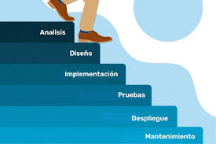
Combina los elementos de la cascada con la filosofia de repeticion. El proyecto se divide en modulos que se entregan por separado. El primer incremento suele ser el "nucleo" del sistema.
| Ventajas | Desventajas |
|
- El cliente recibe valor rapidamente. - Permite aprender de la entrega del primer incremento para mejorar el segundo. - Reduce el impacto de un fallo total del sistema. |
- Requiere una arquitectura inicial muy solida para permitir la integracion de piezas futuras. - Es dificil de gestionar si el equipo de desarrollo es pequeño. |
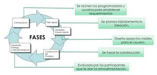
Consiste en construir rapidamente una version simplificada del software para que el usuario lo evalue. No se busca la perfeccion tecnica, sino validar la interfaz y los requisitos.
| Ventajas | Desventajas |
|
- Reduce drasticamente los malentendidos entre desarrollador y cliente. - Aumenta la satisfaccion del usuario al verse involucrado desde el inicio. |
- el cliente puede presionar para que el prototipo que (que es frajil) se convierta en el producto final. - Los desarrolladores suelen sacrificar calidad por velocidad en esta etapa. |
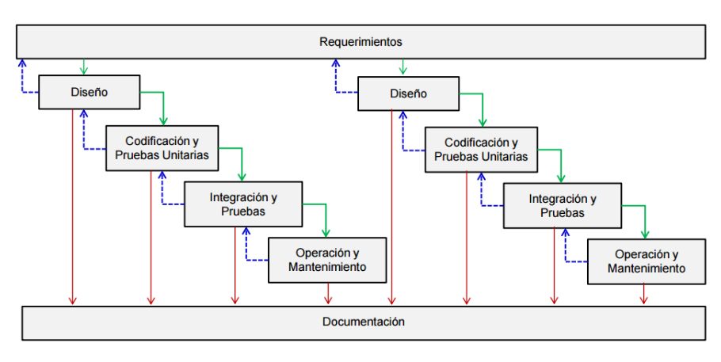
Propuesto por Barry Boehm, este modelo acopla la naturaleza iterativa del prototipado con los aspectos controlados del modelo en cascada. El desarrollo gira entorno al analisis de riesgo en cada ciclo.
| Ventajas | Desventajas |
|
- Es el modelo mas realista para sistemas de gran escala. - Permite aplicar correciones en cada vuelta de la espiral y gestiona los riesgos de forma experta. |
- Requiere gran experiencia en evaluacion de riesgos. - Si un riesgo importante no se detecta, el proyecto fracasara. |
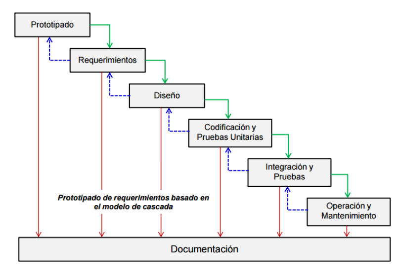
A diferencia de los modelos lineales, este visualiza el proceso como una serie de actividades tecnicas importantes ,tareas y sus estados asociados. Todas las actividades existen simultaneamente pero en diferentes estados.
| Ventajas | Desventajas |
|
- Proporciona una imagen exacta del estado actual del proyecto. - Permite que el equipo trabaje en diseño, mientras que otros corrijen requisitos |
- La gestion de dependencias entre actividades concurrentes es compleja y genera confusion si no hay herramientas de comunicacion potentes. |
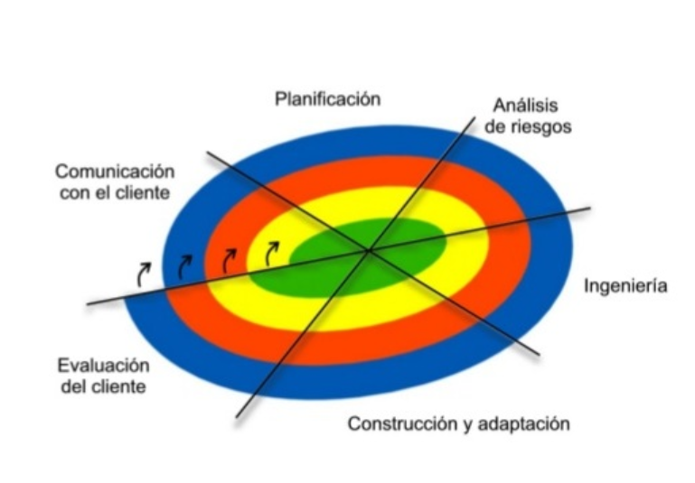
Se fundamenta en la reutilizacion. El proceso busca piezas de software ya probadas (componentes) en bibliotecas o mercados para integrarlos en el nuevo sistema
| Ventajas | Desventajas |
|
- Reduccion del 70% del tiempo de ciclo de desarrollo y de los costos. - Mejora la fiabilidad, ya que los componentes suelen estar ya depurados. |
- El sistema queda limitado a lo que los componentes suelen hacer. - Si el provedor y el componente deja de darle soporte, el software queda en riesgo. |
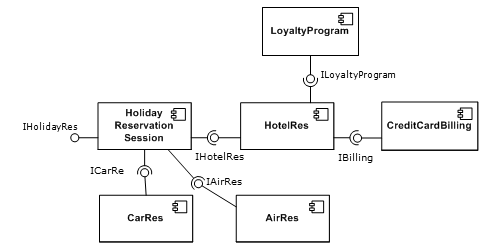
Utiliza una notacion matematica rigurosa para especificar, diseñar y verificar sistemas basados en computadora. se usan pruebas logicas para demostrar que el codigo hace exactamente lo que dice la especificacion.
| Ventajas | Desventajas |
|
- Descubre ambiguedades y errores que son imposibles de detectar con pruebas convencionales. - El estandar de oro para la seguridad |
- Es extremadamente lento y caro. - La mayoria de programadores no tiene la formacion matematica necesaria. |
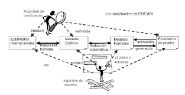
Se basa en la separacion de las "incombeniencias" (concerns). Por ejemplo en lugar de escribir codigo de seguridad en cada funcion, se crea un "aspecto" de seguridad que se aplica a todo el sistema de forma automatica.
| Ventajas | Desventajas |
|
- El codigo principal es mucho mas limpio y facil de leer. - Facilita el mantenimiento, ya que si cambias la seguridad, solo tocas el aspecto y no todo el programa. |
- Requiere herramientas de programacion especificas y una mentalidad de diseño diferente a la programacion orientada a objetos tradicional. |
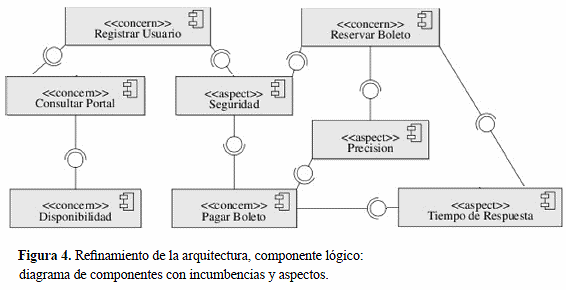
El Proceso Unificado (RUP) es una metodología de desarrollo de software que organiza el proyecto en fases (inicio, elaboración, construcción y transición) y se basa en un enfoque iterativo e incremental, donde el sistema se desarrolla en varias versiones hasta llegar al producto final.
| Ventajas | Desventajas |
|
- Permite detectar errores tempranamente. - Es flexible ante cambios en los requisitos. - Se enfoca en la arquitectura y necesidades del usuario. |
- Puede ser complejo de implementar. - No es ideal para proyectos pequeños. - Necesita mayor tiempo y recursos. - Requiere más documentación. |
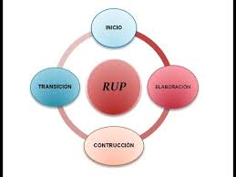
Un marco de trabajo donde el equipo colabora de forma intensa. Se trabaja en "Sprints" y se relizan reuniones diarias de 15 minutos para cordinar tareas. Se basa en la transparencia, inspeccion y adaptacion.
| Ventajas | Desventajas |
|
- Permite cambiar prioridades en cada sprint. - Fomenta la auto-organizacion del equipo y elimina la micro-gestion. |
- No hay fecha final definida al inicio. - Requiere que el cliente este muy presente para validar cada entrega. |
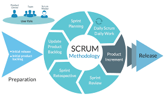
Lleva las mejores practicas de programacion al "extremo". Se enfoca en la retroalimentacion continua, la simplicidad y comunicacion. Sus practicas incluyen Pair Programming y TDD (escribir las pruebas antes que el codigo).
| Ventajas | Desventajas |
|
- El codigo es de altisima calidad y muy facil de cambiar. - Los errores se detectan casi al instante. |
- La programacion en pareja puede ser agotadora y algunos programadores prefieren trabajar solos. |
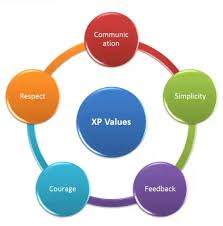
Proviene del sistema de produccion de toyota. Utiliza un tablero visual para mostrar el flujo de trabajo. Su regla de oro es limitar el WIP (Work In Progress), para evitar saturar a los desarroladores de tarea.
| Ventajas | Desventajas |
| - Reduce el tiempo de entrega total y evita el agotamiento de equipo. | - Sin fechas de entragas rigidas, algunos equipos pueden perder el sentido de urgencia. |
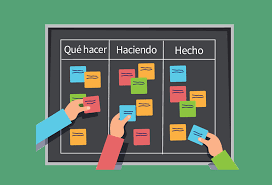